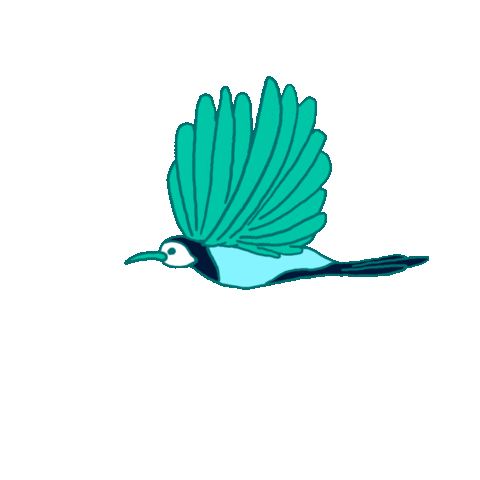

I'm Aswin.
web developer.


Greetings, my name is ASWIN, and I am currently pursuing my Bachelor's degree in Electronics and Communication from Ponjesly College of Engineering. My primary interest lies in the field of coding, and I have been actively involved in diverse and engaging projects to further enhance my skills in this area.
I possess a notable talent in the field of pencil sketching and have successfully completed numerous artworks over time. My journey in this craft began at the age of fifteen, and since then, I have honed my skills to a professional level, which has enabled me to take up paid commissions for my artwork.
I have a fervent passion for reading and have indulged in numerous intellectually stimulating books, including "Atomic Habits," "Psychology of Money," "Ikigai," and many more.